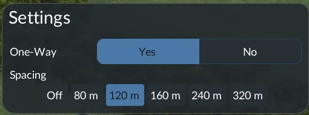
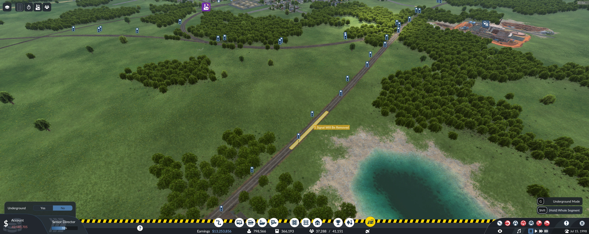
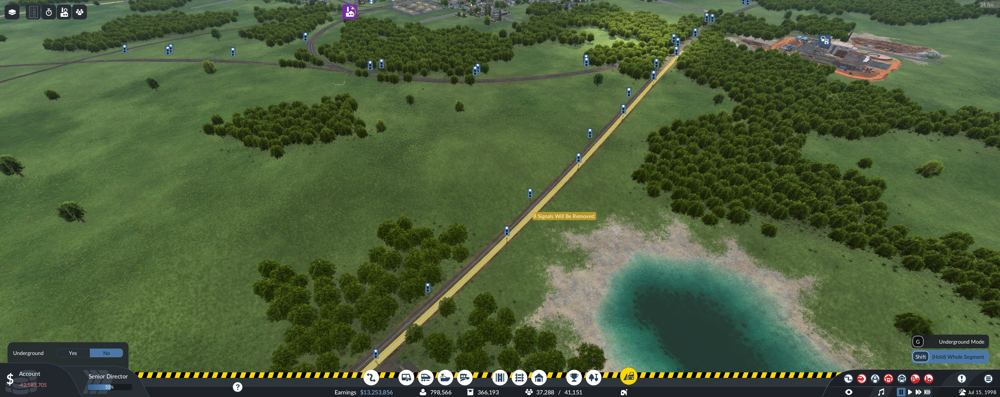

Signal Enhancements
Signalling a long one-direction stretch means placing one signal after another and judging the gaps by eye, and clearing it again means bulldozing them one by one. This mod repeats a one-way signal at a spacing you pick, out to the next switch, and removes a whole stretch's signals with one Shift + bulldoze.
Signal Spacing
Setting: Signal Spacing · On by default
- 1One-Way set to Yes: only then the Spacing row shows.
- 2Spacing: Off places one signal, as in the game; a distance repeats it ahead, here every 120 m.

- 1The tool's Settings panel, with One-Way Yes and a spacing picked.
- 2One-way signals the mod placed along the straight, one every chosen distance.
- 3The run ends where the track reaches a switch.
Why
Passing loops and long stretches run in one direction need signals at even gaps, so trains can follow each other closely. The path signal tool places one signal per click: you place each one by hand and judge the gaps by eye, and a gap left too long holds up every train behind it.
What it does
A Spacing option in the path signal tool, shown when One-Way is set to Yes: Off, 80, 120, 160, 240 or 320 m. Place one one-way signal and the mod adds more ahead of it in the direction of travel, one every chosen distance, until the track reaches a switch or crossing, a dead end or a station. Before a switch or station the last signal goes as close in front of it as the game allows, so trains wait close to it.
How to use
- Open the path signal tool and set One-Way to Yes.
- Pick a Spacing.
- Place one signal where the run should start. The others follow ahead of it, in its direction of travel.
Good to know
- Existing signals on that stretch for the same direction, and two-way signals, are replaced by the new spacing up to the last new signal. Signals for the other direction and waypoints stay.
- Spacing Off places a single signal, as in the game.
- The distances are the game's rail station lengths.
- A stretch shorter than one spacing gets no repeats.
Shift + Bulldoze Signal Stretch
Setting: Shift + Bulldoze Signal Stretch · On by defaultThe same straight, with the bulldozer on one of its signals.

- 1The bulldozer alone takes the one signal: 1 Signal Will Be Removed.

- 1With Shift held, the whole stretch out to the switch turns yellow.
- 2The label counts the signals that go: 8 here.
- 3The game's Shift hint lights up while Shift is held.
Why
To respace a stretch or rebuild a passing loop, its signals have to go first. The bulldozer takes them one at a time, and on a long stretch it is easy to miss one, which then splits a block where you didn't want it.
What it does
Bulldozing a signal with Shift held also removes every other path signal on its stretch of track, out to the next switch, crossing, dead end or station. The track stays. While you hover a signal with the bulldozer and hold Shift, the signals that would go are highlighted in yellow.
How to use
- Pick the bulldozer and point at a signal.
- Hold Shift: the whole stretch turns yellow, and the label counts the signals that will go.
- Click to remove them all.
Good to know
- It removes path signals for both directions. Waypoints and the track stay.
- Without Shift the bulldozer removes the one signal, as in the game.
- The yellow preview also shows while the game is paused.
Settings
Choosing a save's mods: the gear next to Signal Enhancements → Settings. Each save keeps its own choice. Off turns a feature off completely.
| Setting | Default | What it does |
|---|---|---|
| Signal Spacing | On | Spacing option on the path signal tool when One-Way is Yes: repeats the one-way signal ahead, up to the next switch, crossing, station or dead end, replacing same-direction and two-way signals in the way. |
| Shift + Bulldoze Signal Stretch | On | Bulldozing a signal with Shift held also removes the other path signals on its stretch of track, highlighted while hovering. |
| Logging | Off | Writes the mod's messages to the game log (stdout.txt), for bug reports. |
More
Compatibility
Works with any map and any other mod. The signals it places are the game's own one-way path signals.